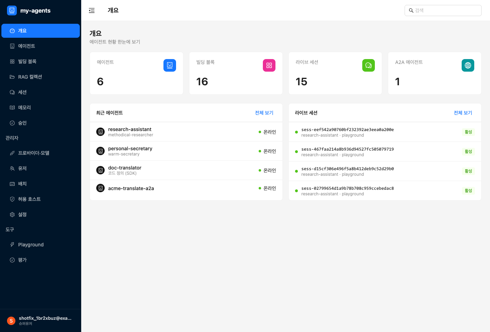
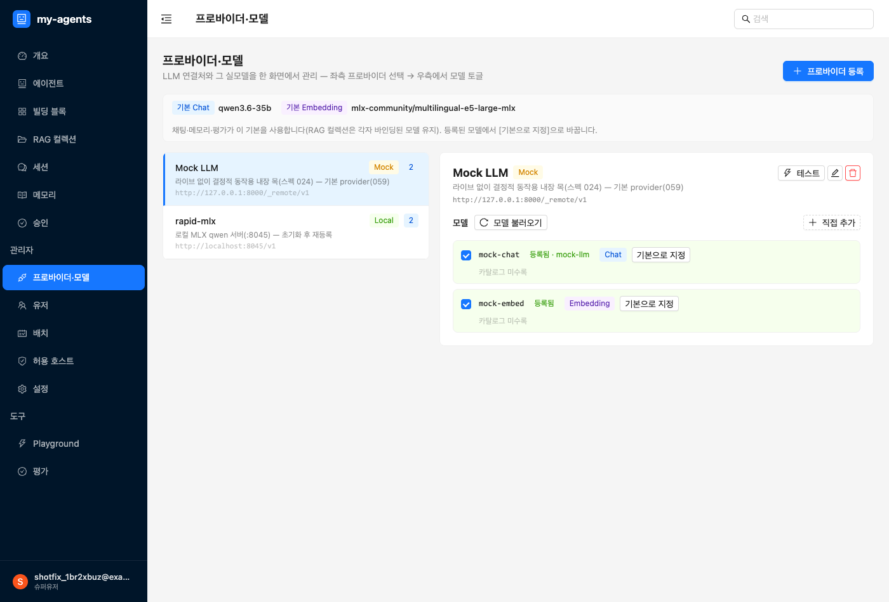
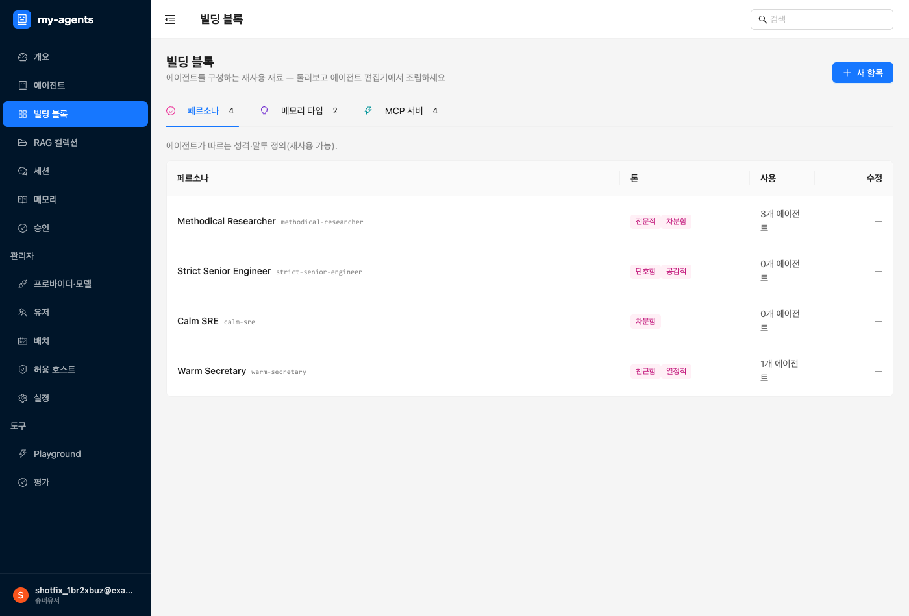
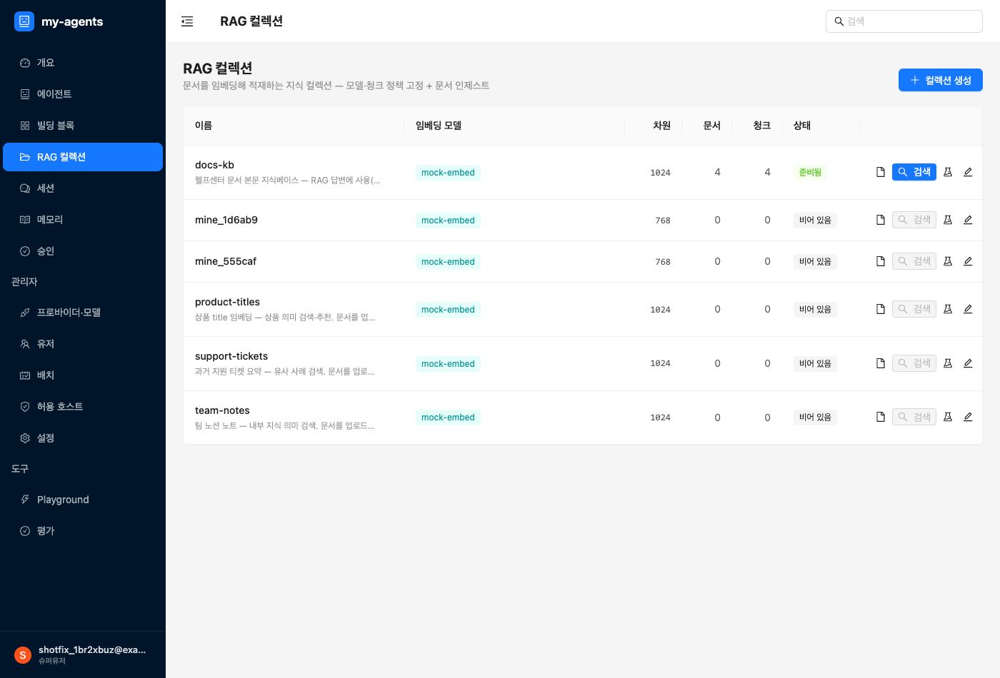
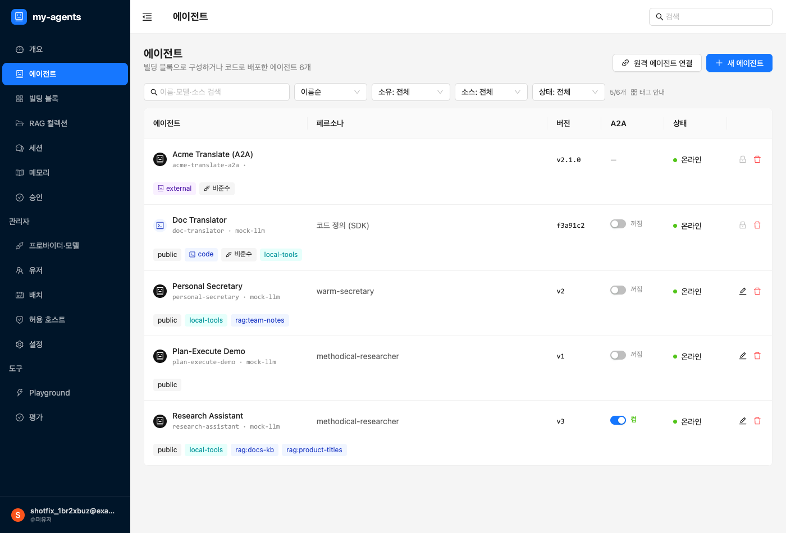
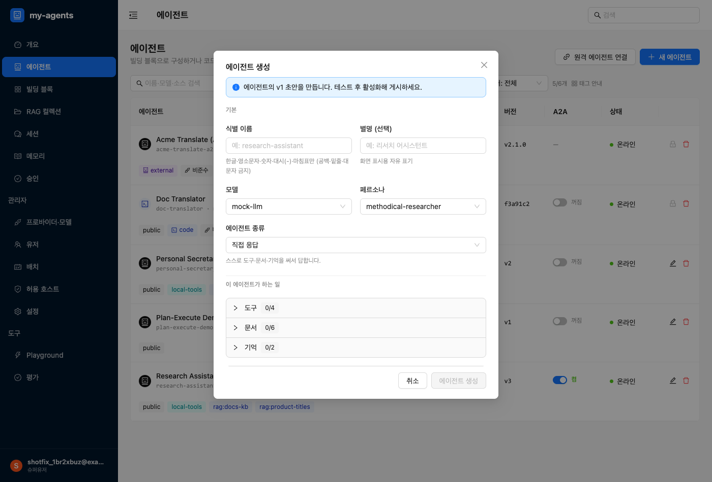
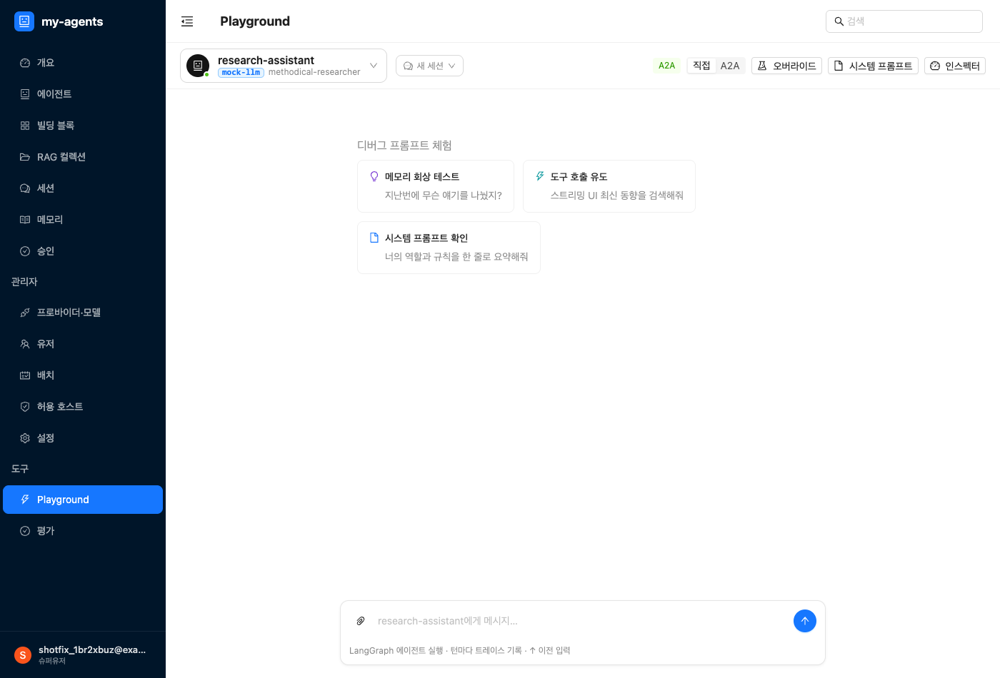
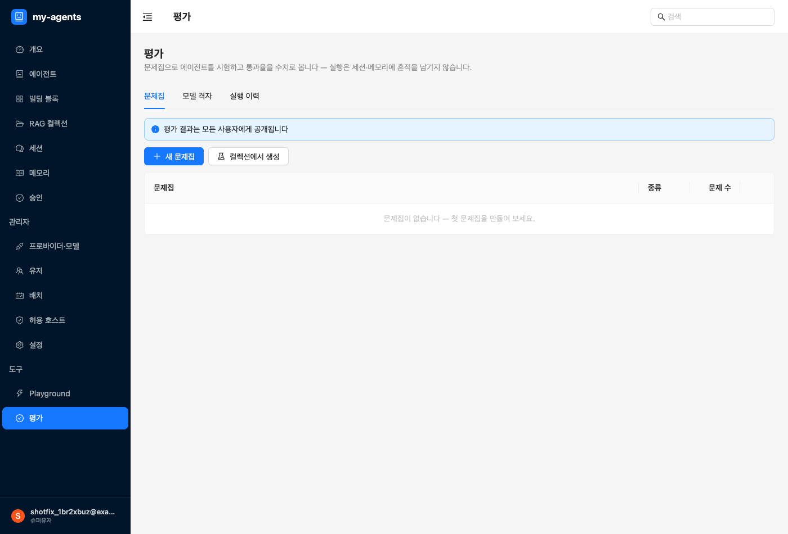
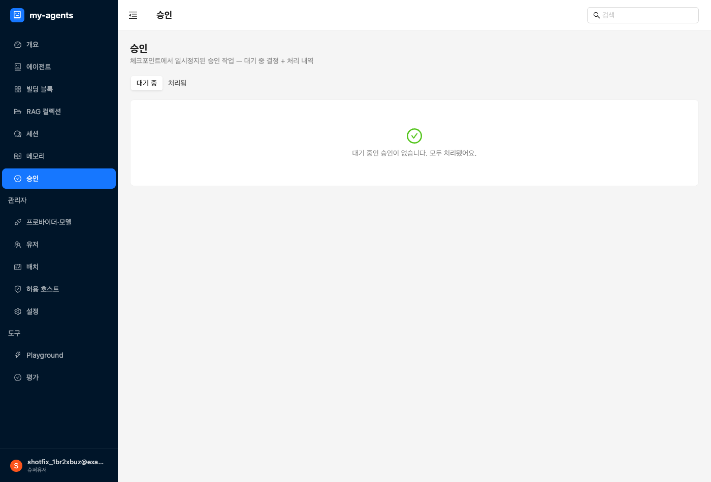

코드를 몰라도 됩니다. 이 문서는 어드민 화면에서 클릭만으로 AI 에이전트를 만들고, 도구·문서·기억을
붙이고, 테스트하고, 품질과 안전을 관리하는 법을 처음 보는 분 눈높이로 설명합니다.
한 줄로: 나만의 AI 에이전트(챗봇·업무 도우미)를 코드 없이 만들고 관리하는 곳입니다.
에이전트 하나는 이런 것들의 조합입니다:
이 모든 걸 왼쪽 메뉴에서 만듭니다.

| 메뉴 | 무엇을 하는 곳 |
|---|---|
| 개요 | 전체 현황을 한눈에 보는 대시보드 |
| 에이전트 | 에이전트를 만들고 관리 (여기가 중심) |
| 빌딩 블록 | 에이전트에 붙일 재료를 등록 — 역할(페르소나)·메모리 타입·도구(MCP) |
| RAG 컬렉션 | 에이전트가 검색해 참고할 문서 묶음을 만들고 채움 |
| 세션 | 지난 대화 기록 보기 |
| 메모리 | 에이전트가 사용자에 대해 기억한 것 보기·관리 |
| 승인 | 위험한 작업을 실행 전에 사람이 승인/거절 |
| 관리자 › 프로바이더·모델 | 에이전트가 쓸 AI 모델을 등록 |
| 관리자 › 유저 | 이 서비스를 쓰는 사람과 권한 관리 |
| 관리자 › 배치 | 정기적으로 도는 작업 |
| 관리자 › 허용 호스트 | 외부와 연결할 때 허용할 주소 목록 |
| 관리자 › 설정 | 서비스 전체 설정 |
| 도구 › Playground | 만든 에이전트와 직접 대화하며 테스트 |
| 도구 › 평가 | 에이전트 답의 품질을 채점 |
순서가 헷갈리면 이것만 기억하세요: 모델 등록 → (필요하면) 재료 등록 → 에이전트 만들기 → Playground에서 테스트.
프로바이더·모델에이전트가 돌아가려면 AI 모델이 최소 하나 있어야 합니다. 관리자 › 프로바이더·모델에서 모델 제공처(프로바이더)와 모델을 등록합니다. 이게 없으면 에이전트를 만들 때 "등록된 채팅 모델이 없습니다"가 뜹니다 — 여기부터 하세요.

빌딩 블록에이전트가 외부 기능(예: 계산, 검색, 사내 API)을 쓰게 하려면 MCP 도구를 등록합니다.

빌딩 블록에서 두 가지 방식:
지금 필요 없으면 건너뛰어도 됩니다 — 에이전트는 도구 없이도 대화합니다.
RAG 컬렉션에이전트가 우리 문서를 찾아보고 답하게 하려면 RAG 컬렉션(문서 묶음)을 만듭니다. RAG 컬렉션에서 이름과 임베딩 모델을 정하고(임베딩 모델도 프로바이더·모델에서 먼저 등록), 행을 업로드합니다. 스키마를 등록하면 업로드 행을 검증해줍니다.

"RAG"는 어려운 말 같지만 뜻은 간단합니다: **에이전트가 답하기 전에 등록한 문서에서 관련 내용을
찾아보게 하는 것**. 사내 규정·제품 설명 같은 걸 정확히 답하게 할 때 씁니다.
에이전트 메뉴)에이전트 목록의 새 에이전트 버튼을 누르면 생성 폼이 열립니다.

순서대로 채웁니다. 아래쪽 "이 에이전트가 하는 일"이 곧 권한 설정입니다.

직접 응답 에이전트라면 아래를 체크로 붙입니다. 여기서 체크한 것만 그 에이전트가 쓸 수 있습니다 — 즉 이게 곧 권한 설정입니다(안 붙이면 못 씁니다, 기본 차단).
저장하면 에이전트가 생깁니다. (권한이 실제로 어떻게 걸리는지는 바로 아래에서 자세히 설명합니다.)
권한은 한 곳이 아니라 세 층에서 걸립니다. "누가(사람) → 무엇을(에이전트) → 얼마나 조심해서(승인)" 순서로 기억하면 쉽습니다.
관리자 › 유저)이 서비스를 쓰는 사람에게 역할을 부여합니다:
| 역할 | 할 수 있는 것 |
|---|---|
| admin | 전부 — 모든 메뉴·자원·승인 처리 |
| member | 기본 사용자 — 에이전트를 만들고 쓰되, 민감한 작업(예: 데이터 삭제 승인)은 못 함. 단, 자기 기억에 쓰는 건 본인이 승인 가능 |
| 슈퍼유저 (계정 옵션) | 권한 검사를 아예 우회 — 신중히 부여 |
관리자 › 유저에서 계정을 만들고, 역할을 부여/회수하고, 계정을 켜고 끕니다. (공개 가입은 없습니다 — 계정은 관리자가 만듭니다.)
에이전트는 체크로 붙인 도구·문서·기억만 쓸 수 있습니다. 기본은 전부 차단이고, 붙인 것만 열립니다.
여기에 중요한 규칙이 하나 더 있습니다 — 내 에이전트에 붙일 수 있는 자원의 범위:
그래서 팀에서 도구를 나눠 쓰려면, 만든 사람이 빌딩 블록에서 그 MCP를 공개로 켜면 됩니다. 공개 전까지는 만든 본인(과 관리자)만 씁니다.
왜 이렇게 하냐면: 남의 비공개 자원 이름을 슬쩍 적어 넣어 그 사람 권한으로 실행시키는 걸 막기
위해서입니다. 에이전트는 만든 사람이 쓸 수 있는 자원까지만 쓸 수 있습니다.
도구 중엔 위험한 것(삭제·쓰기·돈이 드는 것)이 있습니다. 그런 도구는 호출 직전에 사람 승인을 받게 할 수 있고, 두 단계로 정합니다:
빌딩 블록에서 MCP의 도구별로 "승인 필요" 체크. 여기서 켜면 그 도구를 쓰는모든 에이전트에 적용되는 기본 정책이 됩니다. (도구 권한의 출발점은 관리자가 여기서 세웁니다.)
덮어씁니다. 선택지는 셋:
조이는 건 누구나, 푸는 건 관리자만. 승인을 *추가*하는 오버라이드(끔→관리자 승인 등)는 아무나
저장할 수 있지만, 승인을 끄거나 약하게(관리자 승인→본인 승인/끔) 하는 오버라이드는 **관리자만
저장할 수 있습니다**. 일반 사용자가 안전장치를 몰래 해제하는 걸 막기 위해서입니다.
에이전트가 도구를 부르는 순간, 이 순서로 확인됩니다:
승인 메뉴로, 아래 5단계)셋 다 통과해야 실행됩니다. 하나라도 막히면 실행되지 않는 게 기본값입니다(안전 우선).
Playground)도구 › Playground에서 방금 만든 에이전트를 골라 직접 대화해봅니다.

Playground는 "정밀 테스트 통로"입니다 — 배포 전에 여기서 충분히 굴려보세요.
평가)도구 › 평가에서 에이전트 답의 품질을 채점합니다.

기준을 넣습니다.
평가는 "바꿨더니 더 나아졌나/나빠졌나"를 숫자로 확인하는 안전망입니다.
승인)위험하거나 되돌리기 어려운 작업(예: 데이터 삭제, 사용자 기억에 쓰기)은 에이전트가 바로 실행하지 않고 멈춰서 사람의 승인을 기다리게 할 수 있습니다.
승인 메뉴(또는 상단 배지)에 항목이 뜹니다.
프로바이더·모델에서 모델을 먼저 등록하세요(1단계 ①).프로바이더·모델에 먼저 등록하세요.확인하세요.
허용 호스트에 주소가 있는지 확인하세요.참고 — 산출물형(결과물 수집) 에이전트: "대화로 정보를 모아 정해진 결과물(JSON)을 만들어 외부로
보내는" 특수한 에이전트는 지금은 코드로 만듭니다(개발자 가이드).
이것의 노코드 버전(화면에서 항목·후보·보낼 곳만 정하면 되는)은 준비 중입니다.